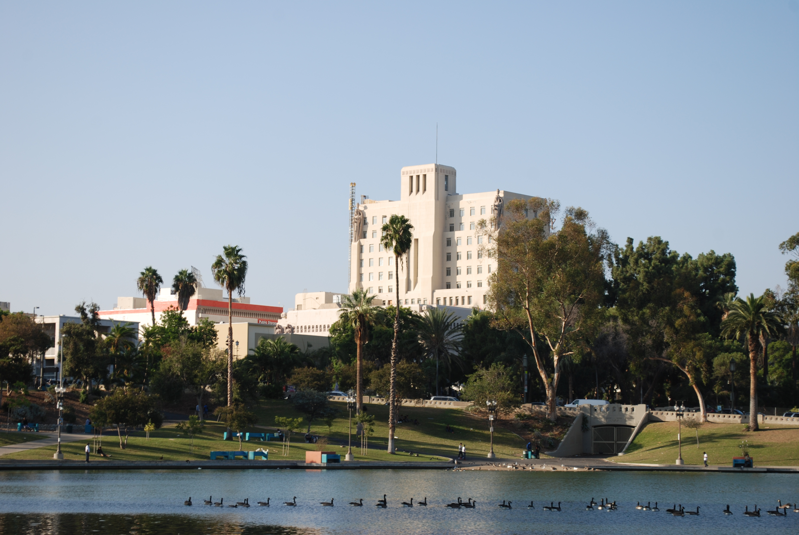
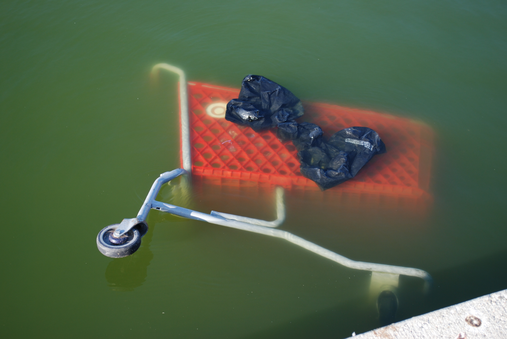
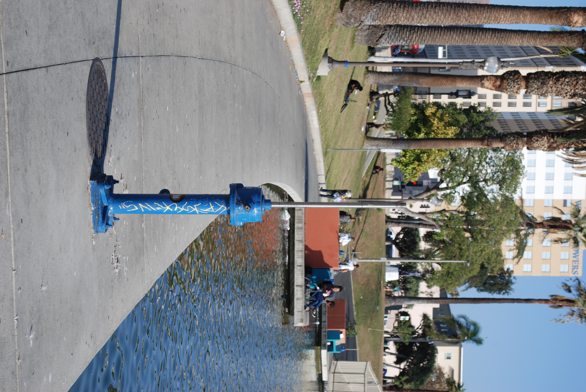
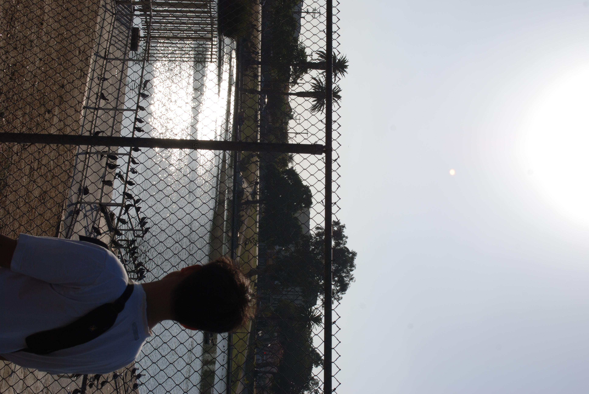
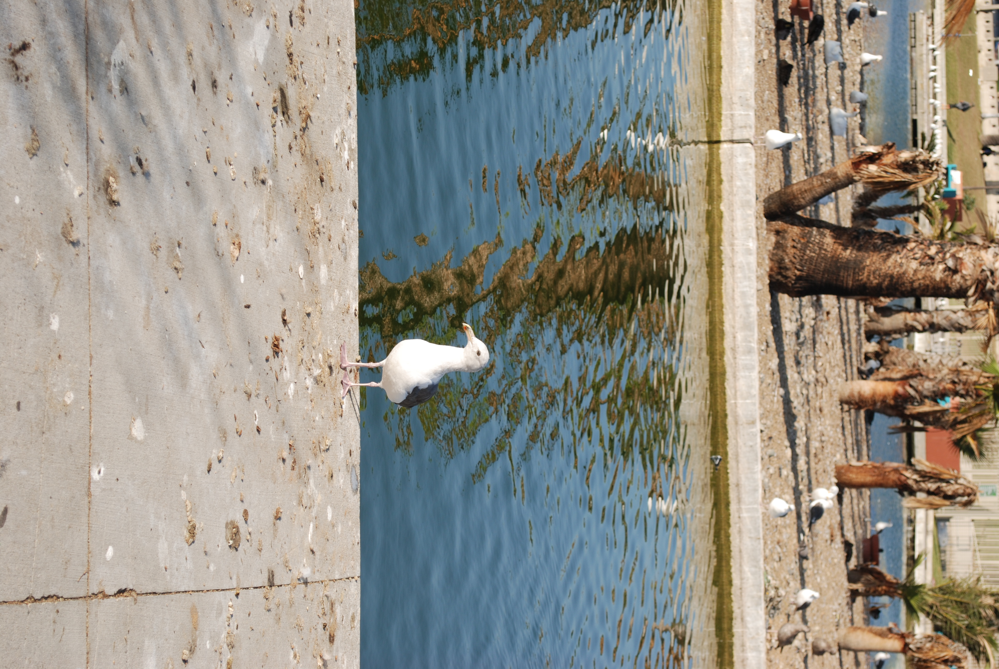
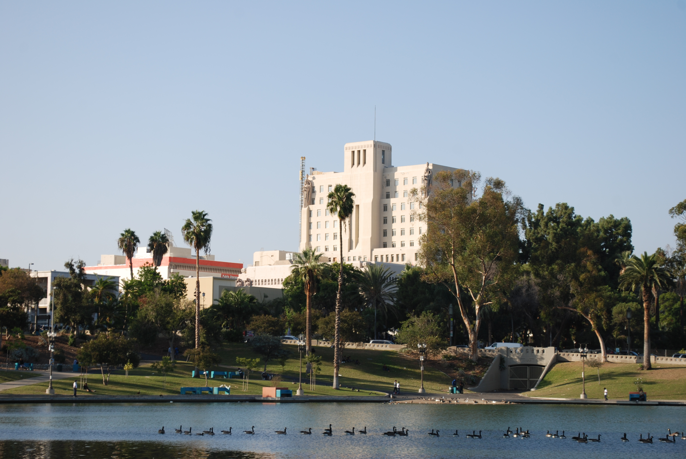
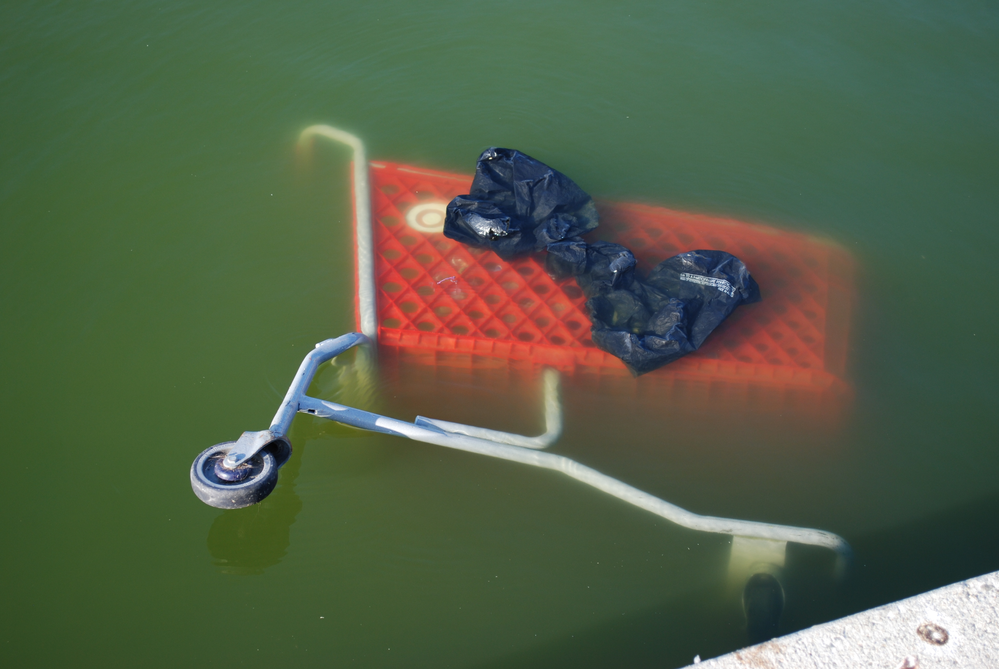
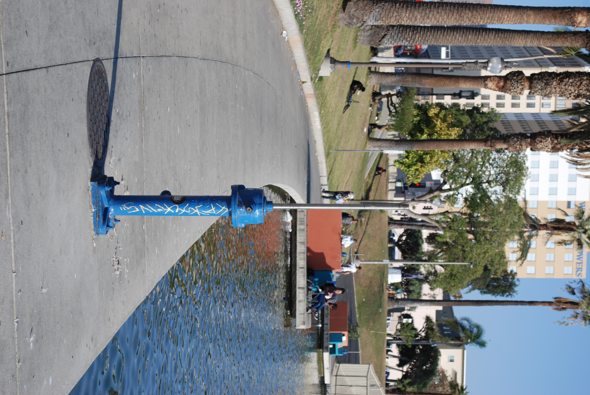
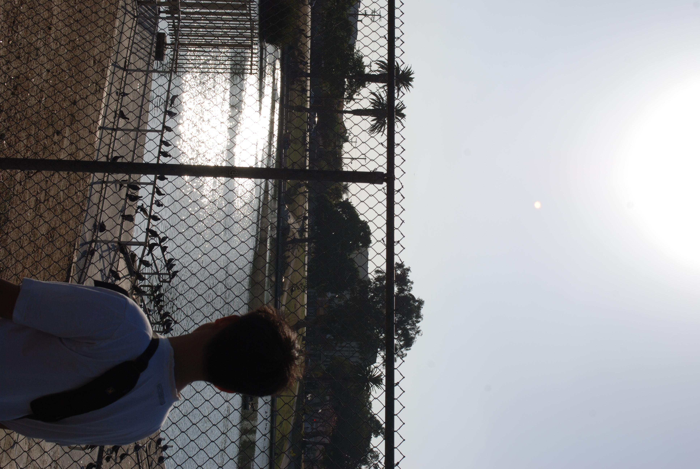
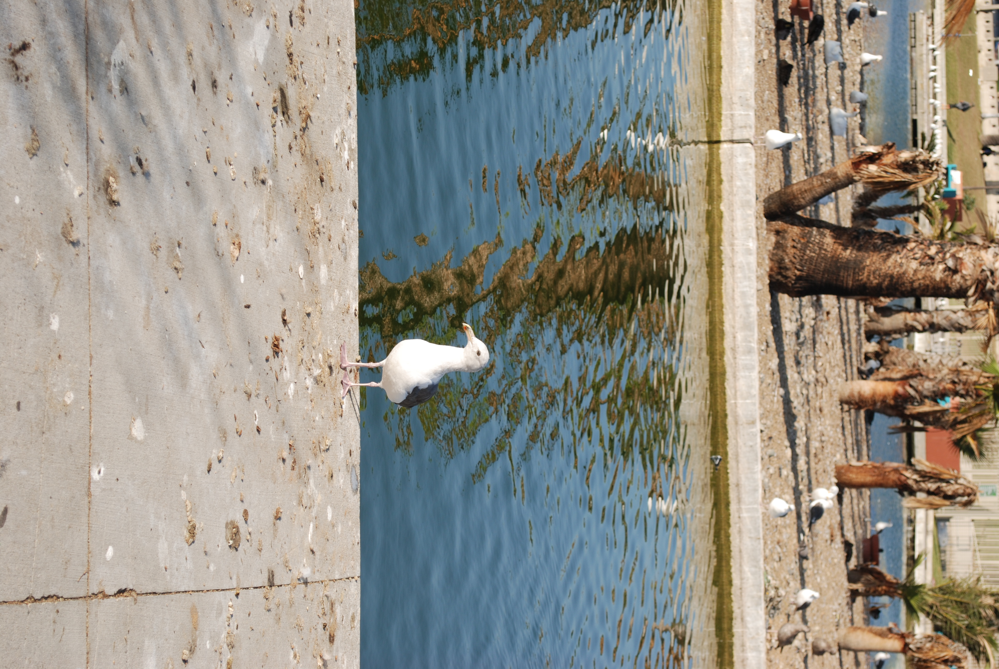

NON / FICTION
갈 곳 없어 간 곳, 맥아더 공원
6 October 2022

외딴 땅에 온 이민으로서 정체성 또는 자존심을 지켜야 한다는, 절대 동포는 동포끼리 붙어야 한다는 이민 집념이 인종차별로 변질되는 듯 하다. Photographs by JONATHAN PARK and PETER LIU
Read this article in:
"어서 타세요."
하필 기사 아저씨는 한국 사람이었다. 사오십대 정도 돼보였다. 이름 보고 아셨을 리는 없고. 내가 그리 동포 같이 생겼던가.
"예."
"사람 바쁜데 참."
어느새 차는 떠나고, 일상적인 침묵이 잠시 내려앉았다.
"맥아더 공원 가시는 거 맞죠?"
"네."
"거 별거 없는데."
"아 그래요."
"엘에이 볼 거 그리 많은데 굳이."
"거기가 왜..."
"거지들만 많고. 더럽고. 마약하는 놈들만 널렸죠." 예상한 바였다. "거기 한국 사람 아무도 안 가요. 히스패닉들만 많고."
"뭐, 엘에이는 다 그렇지 않나요."
이에 별 답장 없었다. 계속 대화를 나눠보니 관광객으로 착각하신 듯했다. 엘에이 사는 대학생이라 설명하던 중에 이미 도착해 있었다.
차에서 내렸다. 동포 어른들의 흔한 넘사벽이었다. 더럽고 가난한 꼴을 못 보는 민족. 외딴 땅에 온 이민으로서 정체성 또는 자존심을 지켜야 한다는, 절대 동포는 동포끼리 붙어야 한다는 이민 집념이 인종차별로 변질되는 듯 하다. 음악이 흘러오고 아이들이 자유로이 노는 광경에 우선 "히스패닉"이란 단어가 떠오른다는 것. 애초에 자세히 보지도 않았을 것이다.
어느 정도는 기사 아저씨 말이 맞았다. 죽어가는 나무 심은 화분 옆을 지날 때 익숙한 찌든내가 불어오고, 바싹 마른 눈주름 끼고 헐레헐레 걸어가는 몇 명은 있었다. 딱히 오래 앉아 즐기고 싶은 곳은 아니었다만, 그래도 사람이 사는 곳 같아 상쾌했던 기억이 남는다. 무덤덤한 일상에서의 탈출, 또는 모험이랄까. 이런 사소한 순간들까지도 모험으로 삼으니 살 맛이 나더라. ■

 








